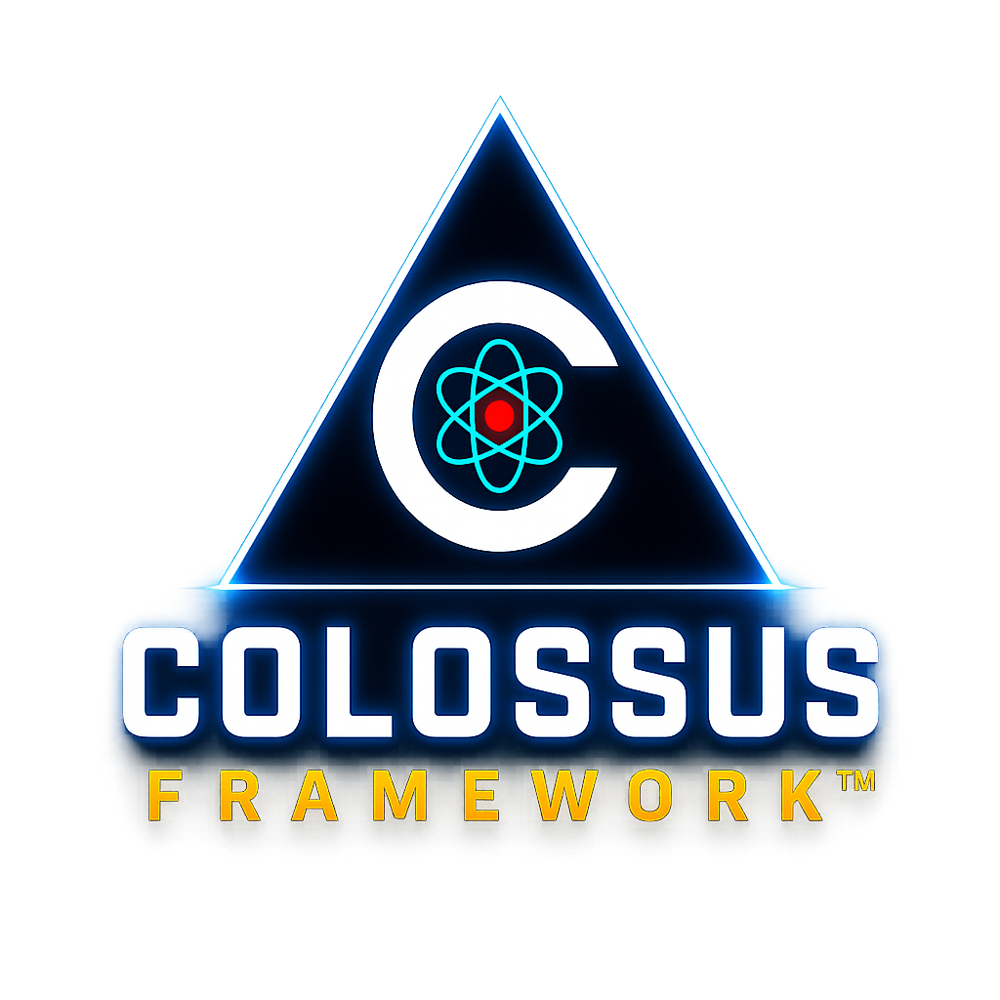

FORBINAI™
THE TRUST LAYER FOR ARTIFICIAL INTELLIGENCE
The Colossus
Framework™
Organizations are deploying AI faster than governance frameworks can keep pace.
The Colossus Framework™ provides a structured approach for evaluating trust, managing risk, strengthening human oversight, and maintaining accountability in AI-enabled systems.
Supporting components, including the Colossus Safety Principles™ and the Colossus Risk Indicators Framework™, provide additional guidance for assessing AI safety and governance maturity.
